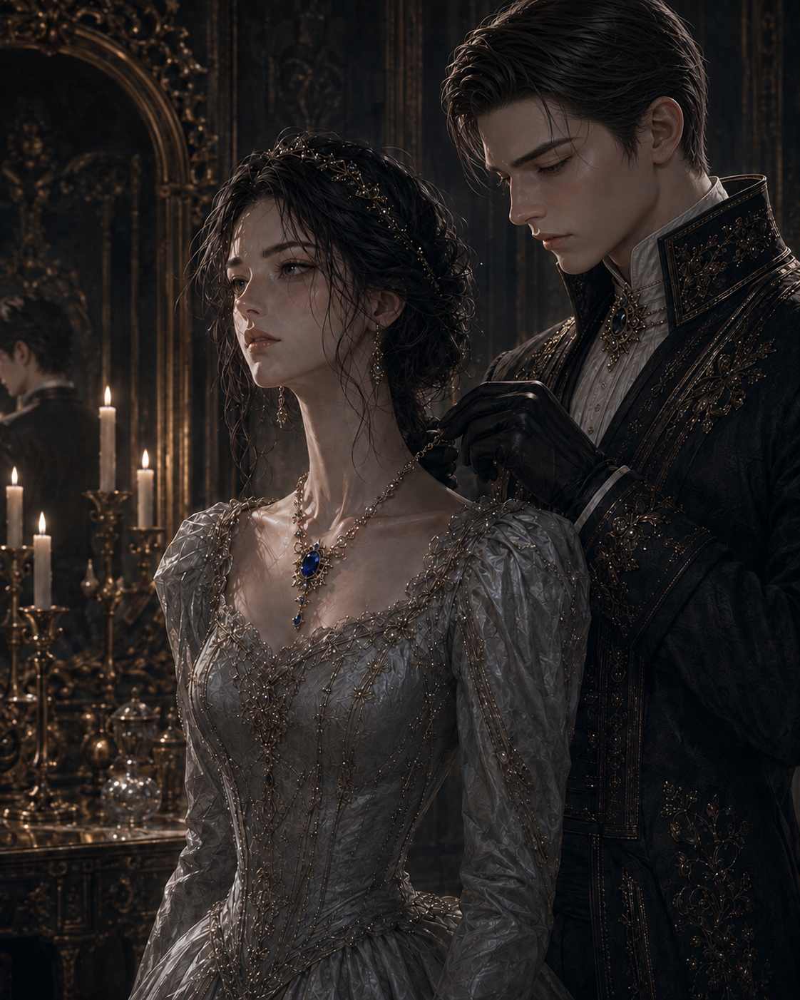

왕관이 깨지고,
거울이 그녀를 마녀라 부르기 일 년 전.
스물여덟 번째 이름의 날 아침.
아이리스 애시워스는 거울 속 자신의 얼굴을 여러번 연습한 뒤에야, 그 얼굴을 방 밖으로 내보냈다.
허영 때문은 아니었다.
그녀가 지켜야 하는 것은 아름다움이 아니라, 사람들이 믿고 있는 아이리스 애시워스였다.
아이리스는 거울 속 자신의 입술 끝을 바라보았다.
보이지 않는 실로 끌어올리듯 천천히 미소를 지었다. 광대뼈 언저리가 가늘게 떨렸다. 그녀는 그 떨림이 가라앉을 때까지 같은 표정을 유지했다.
그 얼굴은 하루도 저절로 유지되지 않았다.
매일 같은 온도로 데워두어야 하는 방처럼, 손자국 하나 남지 않도록 끊임없이 닦아두어야 하는 은식기처럼.
침실 벽의 거울은 작고 장식도 거의 없었다. 하지만 궁전의 다른 거울과 똑같은 규칙을 따랐다.
그것은 아이리스가 실제로 어떻게 생겼는지보다, 사람들이 그녀를 어떻게 보고 있는지를 충실히 비췄다.
그리고 사람들이 아이리스 애시워스에게서 보아야 하는 것은 언제나 무해하고 완벽한 아름다움이었다.
특히 오늘은 그럴 필요가 있었다.
이름의 날은 생일보다 판정에 가까웠다. 지난 일 년 동안 자신의 이름에 얼마나 어울리게 살았는지, 거울 앞에서 확인받는 날.
왕족에게는 축하보다 증명에 가까운 날이었다.
아이리스는 먼저 ‘감사합니다ʼ를 뜻하는 미소를 연습했다.
입술은 부드럽게 열되 이를 너무 많이 드러내지 않았다. 지나치게 환한 미소는 가벼움으로 기록될 수 있었고, 너무 얕은 미소는 오만으로 읽힐 수 있었다.
그다음에는 ‘염려하지 않으셔도 됩니다ʼ를 뜻하는 고요함을 연습했다.
눈을 조금 낮추고, 이마에는 아무런 생각도 스치지 않은 듯 힘을 풀었다.
세 번째 것은 연습하지 않았다.
쇄골 아래 어딘가에 오래 남아 있는 감각 같은 것이 있었다.
그것은 아직 어떤 표정도 갖지 못했다.
얼굴이 생기기 전까지는 존재하지 않는 것으로 하자고, 아이리스는 정해두었다.
그녀는 그런 결정을 내리는 데 익숙했다.
표정 연습을 마친 뒤에도 조식까지는 조금 시간이 남아 있었다.
아이리스는 화장대 아래쪽 서랍을 열었다.
안쪽에 놓인 천을 걷자 손바닥보다 조금 큰 공책이 나왔다. 표지에는 이름도 문장도 없었다.
아이리스는 익숙하게 책을 펼쳐 몇 줄을 적었다.
펜 끝이 멈추는 동안 복도에서 시녀들의 발소리가 지나갔다.
그녀는 공책을 덮어 다시 천 아래에 넣었다.
공책을 펼치는 손보다, 덮어 숨기는 손이 더 빨랐다.
삼 년 동안 반복해서 배운 동작이었다.
아이리스는 마지막으로 거울 속 표정을 확인한 뒤 방문을 나섰다.
창밖의 나무들은 마지막 잎을 떨구고 있었고, 아침 공기에는 이미 겨울의 냄새가 섞여 있었다.
작은 식당에 도착했을 때에는 이미 그녀의 얼굴이 그녀보다 먼저 와 있었다.
“이름의 날을 축하한다, 아이리스.”
에드먼드 왕이 말했다.
그는 빵 위에 버터를 바르고 있었다. 칼끝 아래 흐트러진 자리를 하나도 남기지 않으려는 듯한 집요함이 보였다.
“내년 이름의 날에는 계승식을 치르고 있겠지. 왕관이 네 머리 위에서 가장 눈부시게 빛나기를 바라마.”
“먼저, 오늘 판정 의식에서 그 눈부심을 증명해 보이렴.”
어머니인 세라핀 왕비가 동부 영지의 수확 집계서에서 눈을 떼지 않은 채 덧붙였다.
종이를 쥔 손의 각도가 지나치게 반듯했다. 첫 줄을 다 읽기도 전에 이미 내용을 판단해버린 사람의 손이었다.
“감사합니다.”
아이리스는 아침에 연습했던 미소를 지으며 예의를 지켰다.
세라핀 왕비가 고개를 들지 않은 채 말했다.
“앉으렴.”
애시워스가의 식탁에서 자리는 선택되는 것이 아니었다.
기록되는 것이었다.
아이리스의 의자는 등받이가 높았고 창가에 가장 가까웠다. 그해 공식 초상화에 사용된 리본과 같은 짙은 청색 천으로 덮여 있었다.
여섯 살 때부터 그녀의 자리였다.
가정교사들이 처음으로 아이리스를 ‘성실함ʼ으로 인증한 날, 식당 벽의 거울은 아주 조금 밝아졌다. 그날 이후 누구도 그녀가 다른 자리에 앉을 가능성을 생각하지 않았다.
아버지의 의자는 상석에 있었다.
왕의 자리답게.
어머니의 의자는 그 오른편에 있었다.
왕비의 자리답게.
그리고 네 번째 의자가 있었다.
다른 것보다 작고 벽 가까이 밀려 있었으며, 한 번도 접시가 놓인 적이 없는 의자였다.
누구도 그 의자에 관해 말하지 않았다.
에드먼드는 버터가 고르게 발린 빵을 정확히 반으로 잘랐다.
“동부에서 또 불만이 많다더군. 관대해야 할 해만 되면 늘 이런 식이지.”
“폐하께서 관대하시니까요.”
아이리스가 잔을 들어 올리며 말했다.
“그게 오히려 문제일지도 모르죠. 한 번의 예외가 다음 요구의 근거가 될 테니까요.”
정확한 대답이었다.
아버지가 웃었다.
진짜 웃음이었을 거라고 아이리스는 생각했다.
예전에는 어렵지 않게 구별할 수 있었다. 그러나 요즘은 점점 자신이 없어졌다.
너무 오랫동안 정해진 표정만을 보다 보니, 어느 순간부터는 진짜 감정조차 잘 연기된 표정처럼 보였다.
어머니는 집계서에서 눈을 떼지 않았다.
다만 입꼬리가 아주 조금 움직였다.
잘했다. 계속하렴.
그렇게 번역할 수 있는 움직임이었다.
아이리스는 미소를 흐트러뜨리지 않은 채 말을 이었다.
“동부에서 요구한 추가 배급량은 기존 장부와 대조해보겠습니다. 불만을 받아들이는 일과, 그들의 요구가 모두 타당하다고 인정하는 일은 다르니까요.”
그제야 세라핀이 집계서의 다음 장을 넘겼다.
아이리스의 대답은 충분했던 모양이었다.
“그보다 변경 사절단의 도착이 내일로 당겨졌단다.”
세라핀이 말했다.
에드먼드가 낮게 코웃음을 쳤다.
“나흘 뒤로 정해둔 일정을 하루 전날 바꾸다니, 베인가답군. 그 집안은 오래전부터 이름 하나조차 정해진 자리에 두지 못했지.”
아이리스는 빵을 잘랐다.
변경의 베인가에 대해서는 알고 있었다.
왕국의 북쪽 경계를 지키는 오래된 가문.
궁정에서 베인가는 늘 예외가 많은 집안으로 기록되었다. 이름도, 혼인도, 사람을 묶는 방식도 중앙과 달랐다.
에드먼드는 그것을 무질서라고 불렀다.
궁정에서 무질서라는 말은 대개, 정해진 자리를 지키지 않는다는 뜻에 가까웠다.
하지만 그것은 입 밖에 내는 종류의 생각이 아니었다.
“후계자가 직접 오는 모양이더군. 이름이 뭐였지?”
어머니가 집계서 옆에 놓인 얇은 서류를 펼쳤다.
“홀리스 베인.”
아이리스는 그 이름을 속으로 한 번 되뇌었다.
내일 그를 잘못 부르지 않기 위해서였다.
아침 식사 뒤에는 편지 마흔두 통이 기다리고 있었다.
아이리스는 거의 모든 편지에 직접 답했다.
답장을 시종에게 구술하는 것은 왕족에게 허락된 일이었다. 그러나 자신의 이름을 기억하고 직접 답하는 공주와, 타인의 손을 빌려 의무를 처리하는 공주는 사람들의 기억 속에 다르게 남았다.
그 차이는 곧 평판이 되었고, 거울은 사람들이 믿기 시작한 얼굴을 충실히 돌려주었다.
아이리스는 마흔 번째 편지에도 첫 번째와 같은 온기를 담았다.
수확량이 줄어든 농부에게는 왕국이 잊지 않고 있다는 확신을 주었고, 딸의 궁정 진출을 바라는 하급 귀족에게는 아무것도 약속하지 않으면서 가능성만은 남겨두었다.
마흔 번째 편지를 접었을 때 손목이 저렸다.
그녀는 마지막 두 통을 옆으로 밀었다.
“남은 편지는 구술하시겠습니까, 전하?”
시녀 브리나가 조심스럽게 물었다.
아이리스는 맞은편 거울을 보았다.
아직 변화는 없었다.
“두 통은 내일 하지.”
“오늘 이름의 날 판정에 포함될 수도 있습니다.”
브리나는 충고하려는 것이 아니었다.
걱정하고 있었다.
아이리스는 다시 편지를 끌어왔다.
“그렇다면 오늘 끝내야겠구나.”
마지막 편지에는 북부에서 보내온 장부의 사본이 한 장 딸려 있었다.
한 아이의 이름 아래 어머니와 이모의 이름이 나란히 적혀 있었다. 두 사람이 함께 아이를 길렀다는 짧은 설명도 있었다.
중앙에서 옮겨 적은 표에는 보호자의 이름을 넣을 칸이 하나뿐이었다.
어느 쪽을 남길지 확인해 주십시오.
아이리스는 편지의 마지막 줄을 다시 읽었다. 잘못 적힌 이름이 있었다면 바로잡았을 것이다. 그러나 북부에서 보내온 종이에는 어느 쪽도 잘못이라는 말이 없었다.
그녀는 두 이름을 그대로 두고 여백에 작은 글씨로 적었다.
미확인. 다시 살필 때까지 아이의 배급은 그대로 둘 것.
그 한 줄을 다 쓰고 나서야 손목을 감쌌다.
브리나는 대조표를 빼내어 다음 회의에서 살필 서류 묶음에 끼웠다.
마지막 편지의 봉랍을 찍어 누를 즈음, 기록관리부 수장 펜이 찾아왔다.
그는 아이리스에게 예를 올린 뒤 준비해온 장부를 펼쳤다.
“지난 한 달 동안 전하의 공식 인상은 대체로 안정적입니다.”
“대체로라는 말은 언제나 흥미롭군요.”
펜은 웃지 않았다.
“북쪽 회랑에서 두 차례, 전하께서 생각에 잠겨 계셨다는 기록이 있습니다.”
“생각에 잠겨 있으면 안 되나요?”
“그 자체는 문제가 아닙니다. 다만 축하 행사가 이어지는 시기였으므로, 일부가 그것을 불만이나 우울로 해석했습니다.”
“그 일부가 몇 명이지요?”
“판정은 숫자로만 이루어지지 않습니다.”
한 사람의 말이라도 그가 충분히 신뢰받는 기록을 가졌다면, 열 사람의 침묵보다 무거웠다.
“무엇을 고치면 될까요?”
“조금 더 평온해 보이시는 것으로 충분합니다.”
평온해 보이는 것과 평온한 것은 달랐다.
그러나 펜의 장부에는 그 차이를 적는 칸이 없었다.
“그렇게 하죠.”
아이리스는 맞은편 거울을 향해 입가의 힘을 아주 조금 풀었다. 펜은 만족한 얼굴로 그녀의 대답한 말만 장부에 적었다.
저녁 연회가 다가오자 아이리스는 미리 준비된 은회색드레스로 갈아입었다.
왕국의 품위와 자비를 나타내는 색이라고 의상 담당관은 덧붙였다.
아이리스가 팔을 내린 채 서 있자, 시녀들이 등 쪽의 끈을 단단히 당겨 매듭을 지었다.
“조금 더 조여야겠습니다.”
담당관이 말했다.
“지난 초상화보다 허리가 느슨해 보이면 절제가 약해진 것으로 읽힐 수 있습니다.”
“숨을 쉬는 데 문제는 없겠지요?”
아이리스가 물었다.
담당관은 농담인지 아닌지 판단하지 못한 얼굴을 했다.
“숨은 쉬실 수 있습니다, 전하.”
충분히 편안하게 숨을 쉴 수 있다는 말은 아니었다.
시녀들과 담당관이 방을 나서고 얼마 지나지 않아, 정중하게 문을 두드리는 소리가 났다.
정혼자인 커런 노윅이었다.
그는 단정하고 격식 있는 차림이었다. 소매의 금실은 좌우가 조금도 어긋나지 않았고, 머리카락은 바람을 한 번도 맞지 않은 듯 반듯하게 정돈되어 있었다.
“이름의 날을 축하합니다, 아이리스.”
커런이 다가와 작은 벨벳 상자를 내밀었다.
상자가 열리자 차갑고 푸른빛을 머금은 사파이어 목걸이가 모습을 드러냈다.
아주 오래전에 세공된 듯 무겁고 고전적인 형태였다.
“노윅 가문에서 보관하고 있던 물건입니다. 제 선조 얼라릭 노윅께서 전하의 고모님이자 선대 공주였던 이졸데 전하를 위해 준비하셨던 예물이지요.”
아이리스의 시선이 푸른 보석에 멈췄다.
이졸데 애시워스.
아침 식탁 귀퉁이에 놓여 있던 네 번째 의자의 주인.
원래대로라면 이 왕국의 왕관을 썼어야 했던 여자.
왕관도, 혼인도, 자신에게 예정되어 있던 이름도 완성하기 전에 세상을 떠난 비운의 공주.
왕국의 기록 속에서 이졸데의 삶은 언제나 그 한문장으로 끝났다.
“그분은 참으로 안타까운 분이셨습니다.”
커런이 목걸이를 들어 아이리스의 목에 걸어주며 낮게 말했다.
“계승식을 며칠 앞두고 열병으로 돌아가셨지요. 그 뒤로 이 예물은 오랫동안 주인을 잃은 채 보관되어 있었습니다.”
잠금쇠가 목 뒤에서 닫혔다.
그 작은 소리와 함께 맞은편 거울이 희미하게 밝아졌다.
사파이어가 아이리스의 가슴 한 가운데로 내려앉았다.

커런은 목걸이에서 손을 떼며 말했다.
“하지만 오늘, 마침내 가장 완벽한 주인을 찾은 것 같아 기쁩니다.”
거울 속 아이리스의 눈동자가 미세하게 떨렸다.
커런은 그것을 감동으로 받아들인 듯 부드럽게 웃었다.
“조금 무겁습니까?”
“아닙니다.”
아이리스가 대답했다.
커런은 안심한 듯 고개를 끄덕였다.
“곧 익숙해질 겁니다. 중요한 것들은 처음에는 대개 그 무게가 느껴지는 법이니까요.”
그 말에도 악의는 없었다.
그래서 아이리스는 무엇이 자신을 숨 막히게 하는지 설명할 수 없었다.
사파이어가 심장 위를 묵직하게 짓눌렀다.
고모가 끝내 다다르지 못한 자리에 자신은 무사히 이르기를, 모두가 바라고 있었다.
아이리스는 아침에 연습했던 미소를 얼굴 위로 끌어올렸다.
거울에서 그 미소를 확인한 커런이 만족스럽게 고개를 끄덕였다.
“가시지요. 대전의 거울들이 당신의 평온함을 기다리고 있습니다.”
아이리스는 커런이 내민 손을 잡았다.
서늘한 보석이 가슴 위 한 가운데에서 무겁게 흔들리고 있었다.